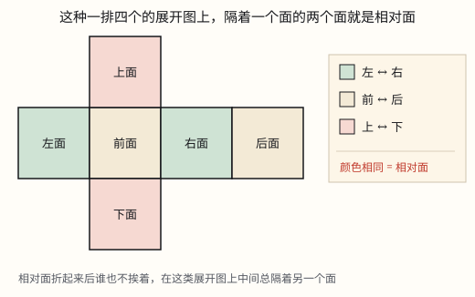
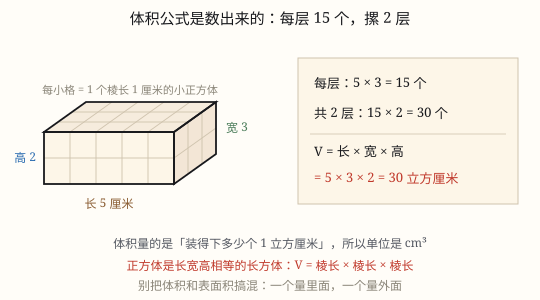

长方体和正方体的认识、表面积与体积
长方体有 6 个面、12 条棱、8 个顶点，相对的面完全相同；12 条棱正好分成 3 组，每组 4 条。正方体是它的特殊情况。
| 所属主题 | 立体图形 |
|---|---|
| 所属模块 | 图形与几何 |
| 课标学段 | 第三学段（5~6年级） |
| 前置知识 | 平行与垂直、平行四边形和梯形的认识、面积、面积单位与长方形正方形的面积、体积和体积单位与不规则物体的体积 |
| 核心素养 | 空间观念几何直观推理意识量感运算能力 |
教材定位
人民教育出版社《2024年版》
对应五下第 4 单元「长方体和正方体」：长方体和正方体的认识与展开图。；对应五下第 4 单元「长方体和正方体」：表面积。；对应五下第 4 单元「长方体和正方体」：长方体和正方体的体积公式。
课标要求
| 图形与几何·图形的认识与测量 | 认识长方体、正方体和圆柱，了解这些图形的展开图，探索并掌握这些图形的体积和表面积的计算公式，认识圆锥并探索其体积的计算公式，能用这些公式解决简单的实际问题。 印刷第 33 页 行为动词：掌握 |
|---|---|
| 图形与几何·图形的认识与测量 | 在图形认识与测量的过程中，进一步形成量感、空间观念和几何直观。 印刷第 33 页 行为动词：感悟 |
| 图形与几何·图形的认识与测量 | 通过实例了解体积（或容积）的意义，知道体积（或容积）的度量单位，能进行单位之间的换算；体验不规则物体体积的测量方法。 印刷第 32 页 行为动词：了解 |
说明
纸箱、砖头、冰箱、课本，形状都是长方体。看一个立体图形，先数清三样东西：面（平平的一整块）、棱（两个面相交的那条边）、顶点（三条棱碰在一起的尖角）。长方体这三样分别是 6、12、8。
6 个面：上、下、前、后、左、右。相对的两个面完全相同——上面和下面一样，前面和后面一样，左面和右面一样。所以 6 个面看上去很多，其实只有 3 种尺寸。
12 条棱。为什么不是 24 条？每个面有 4 条边，6 个面一共 24 条边；但每条棱同时属于两个面，被数了两遍，24 ÷ 2 = 12。
这 12 条棱可以分成 3 组，每组 4 条：4 条长、4 条宽、4 条高。分组的依据是方向——朝着同一个方向的棱，长度一定相等。所以棱长总和 =(长+宽+高)× 4。
8 个顶点：每个顶点正好是一条长、一条宽、一条高碰头的地方。8 × 3 = 24 个「棱的端点」，而每条棱有两个端点，24 ÷ 2 = 12，又回到了 12 条棱。三个数互相扣得上，说明没有数错。
正方体是长、宽、高都相等的长方体：12 条棱一样长，6 个面都是完全相同的正方形。所以正方体一定是长方体，长方体却不一定是正方体。
（长方体和正方体的表面积）
长方体有 6 个面：上面和下面、前面和后面、左面和右面。相对的两个面完全相同——上下两个面都是长 × 宽，前后两个面都是长 × 高，左右两个面都是宽 × 高。
表面积就是这 6 个面的面积之和。既然每种面都有一对，只要算三种，加起来再乘 2：S = 2(ab + ah + bh)，其中 a 是长、b 是宽、h 是高。
正方体的 6 个面完全相同，每个面都是边长 × 边长，所以 S = 6a^2。正方体其实就是长、宽、高都相等的长方体，公式也是它的特例。
表面积算的是「做这个盒子要用多少纸」，所以单位是面积单位：\textcm^2、\textdm^2、\textm^2。
（长方体和正方体的体积公式）
上一节知道了：体积要用「棱长 1 的小正方体」去量。可真拿小方块去填一个大箱子，几万个根本数不完。体积公式就是替你把「数方块」这件事算出来。
在一个盒子里摆棱长 1 厘米的小正方体：沿着长摆，长是几厘米就摆几个；沿着宽摆，宽是几厘米就摆几行；沿着高摆，高是几厘米就摞几层。
每行几个 × 几行 × 几层 = 总个数。每个小正方体是 1 立方厘米，总个数就是体积的立方厘米数。把「每行几个」换成「长」、「几行」换成「宽」、「几层」换成「高」，就得到 V = abh。
正方体的长、宽、高都一样，都是棱长 a，所以 V = a × a × a = a^3，读作「a 的立方」。
还可以横着看：底面摆满一层，个数就是底面积 S；摆几层就是乘高。于是 V = Sh。这个式子不只对长方体成立，圆柱也用它。
体积单位是立方单位：\textcm^3、\textdm^3、\textm^3。算容器能装多少时，可以换成升和毫升：1 \textdm^3 = 1 \textL，1 \textcm^3 = 1 \textmL。
使用场景
物流包装：纸箱的长宽高决定它能装多少、要多少胶带，先要认准它的面、棱和顶点。
工程建造：焊一个长方体框架要备多少角铁，算的就是 12 条棱的总长。
购物与礼品：月饼盒、礼盒在棱上贴金边、装提手，都要按棱长来备料。
校园手工：用吸管和橡皮泥搭长方体、正方体框架，是最快认出面棱顶点的办法。
家庭收纳：柜子、收纳箱能不能塞进墙角，看的是长宽高这三个方向。
（长方体和正方体的表面积）
包装与用料：做快递纸箱、手机包装盒、礼品盒，要先知道用多少硬纸板。
刷漆与贴面：给教室墙面刷漆、给柜子贴饰面板，先算要刷、要贴多大面积。
做水箱和管道：铁皮水箱、通风管道按面的个数算铁皮，多一个面就是一笔钱。
估算成本：知道每平方米材料多少钱，用表面积乘单价就是材料费。
（长方体和正方体的体积公式）
物流运输：纸箱能装多少、两个箱子谁更能装，比的就是体积。
工程建造：混凝土基础、砖垛、土方，按体积算用料、算车次、算重量。
饮食与配比：牛奶盒、蛋糕模具、冰箱内胆的容量，都是长方体体积。
计量与估算：游泳池蓄水多少吨、鱼缸装多少升，先算体积再换单位。
家庭收纳：柜子能放几个收纳箱，用体积估一估就有数了。
注意点
三个数别记混：6 个面、12 条棱、8 个顶点。写成「8 条棱」是最常见的口误。
棱是 12 条不是 24 条。6 个面各有 4 条边，但那条边两个人共用。
棱长总和用 (长+宽+高)× 4，不是乘 3，更不是三个数相乘——三个数相乘是体积。
长方体不一定 6 个面都是长方形。有的长方体有两个相对的面是正方形（比如方柱子），它仍然是长方体。
「相对」指的是正对着、不相邻。左右是相对，左和前是相邻，别弄混。
「正方体是特殊的长方体」只能正着说。反过来说「长方体是特殊的正方体」就错了。
（长方体和正方体的表面积）
先看要算几个面。无盖水箱、无盖回收箱只有 5 个面；通风管道两头是通的，只有 4 个面；抽屉也是 5 个面。题目里「无盖」「不做底面」这些词都是在提醒你。
长、宽、高要先化成同一单位。长 5 分米、宽 30 厘米，要先把 30 厘米化成 3 分米，再代进公式。
表面积用平方单位。别把 \textdm^2 写成 \textdm，更别和棱长总和混。
棱长总和不是表面积。棱长总和是 12 条棱的长度和，(a + b + h) × 4，单位是厘米、分米；表面积是 6 个面的面积和。
（长方体和正方体的体积公式）
体积用立方单位。算出 24 要写 24 \textcm^3，写成 \textcm^2 就变成面积了。
长、宽、高必须是互相垂直的三个方向。斜着量出来的那条不是高。
单位先统一。长 2 米、宽 30 厘米，先化成 200 厘米与 30 厘米，或者 2 米与 0.3 米。
算容积要从里面量。给了壁厚，长、宽、高都要各自减掉两个壁厚。
a^3 是 a × a × a，不是 3a。棱长 5 的正方体体积是 125，不是 15。
体积和表面积是两个量。表面积是包一层皮，体积是占多大地方，不能互相替代。

图 2：拆开摊平后，颜色相同的两个面在展开图上总是隔着一个面

图 1：把盒子剪开摊平，6 个面变成 3 对，算 3 个再乘 2

图 1：每行 5 个、摆 3 行、摞 2 层，30 个小正方体就是 30 立方厘米
为什么是这样

图 1：6 个面、12 条棱、8 个顶点，12 条棱按方向自然分成 3 组
算理推导
拿一个纸箱，先数面：上、下、前、后、左、右，一共 6 个。把上面和下面比一比——形状相同、大小相同，转 180° 能完全重合。前后面、左右面也一样。所以 6 个面是 3 对，每对两个完全一样。
再数棱。沿着一个面数，它有 4 条边；6 个面就有 24 条边。可拿起盒子一转就看见：相邻两个面共用的那条边，被两个面各数了一次，每条棱都被数了两遍，所以 24 ÷ 2 = 12 条。
把 12 条棱按方向分组。竖着的 4 条一样长，都是高；沿着长的方向 4 条一样长；沿着宽的方向 4 条一样长。正好 3 组、每组 4 条——这就是「长、宽、高各 4 条」的来历。为什么同方向就一定一样长？因为长方体的每个面都是长方形，对边相等，一条一条推过去，整组就都相等了。
数顶点：每个角上都是一条长、一条宽、一条高碰在一起，一共 8 个角。8 × 3 = 24 个端点，每条棱 2 个端点，24 ÷ 2 = 12，还是 12 条棱。
拆纸盒（图 2）：沿棱剪开摊平，6 个面变成一张平面图。原来正对着的两个面，在展开图上总是隔着一个面——左面和右面中间隔着前面，前面和后面中间隔着右面。认展开图时先找「隔一个」的那一对，它们就是相对面。
正方体是把长、宽、高拉平：3 组棱变成一样长，用 a 表示，12 条棱共 12a；6 个面都是边长 a 的正方形。它满足长方体的一切条件，只是更特殊，所以叫特殊的长方体。
（长方体和正方体的表面积）
拿一个快递纸箱，沿棱剪开摊平（就像图 1），数一数：一共 6 个长方形，一个不多一个不少。
对着原来的盒子认一认：哪两个面本来是贴在一起的？摊开后会发现，上面和下面一样大，前面和后面一样大，左面和右面一样大——相对的面完全相同。
所以 6 个面其实是 3 对：上下 = ab，前后 = ah，左右 = bh。算 3 个不同的面，再乘 2 就是全部：S = 2(ab + ah + bh)。
为什么「相对的面完全相同」这么关键？如果不相同（比如一个歪歪扭扭的六面体），就得 6 个面一个一个量、一个一个算。长方体正因为相对的面能完全重合，才能用「一对乘 2」省掉一半工作。
正方体再进一步：6 个面全都一样大，只算 1 个面再乘 6，就得到 S = 6a^2。所以正方体公式不用另背，它是长方体公式在长 = 宽 = 高时的样子。
（长方体和正方体的体积公式）
准备一个长 5 厘米、宽 3 厘米、高 2 厘米的小盒子，和一堆棱长 1 厘米的小正方体（图 1）。
先铺一层：沿着长摆，5 个正好到头；沿着宽摆，3 行正好铺满。这一层用了 5 × 3 = 15 个，也就是 15 立方厘米。
往上摞第二层：还是 15 个。两层共 15 × 2 = 30 个，盒子正好装满，不多不少。所以体积是 30 立方厘米。
把三次「数」换成三个「量」：5 个对应长 5 厘米，3 行对应宽 3 厘米，2 层对应高 2 厘米。5 × 3 × 2 = 30，这就是 V = abh。公式没有变魔术，它只是把「摆方块」写成了乘法。
换个说法：一层 15 个，正是底面积 15 平方厘米；2 层就是高 2 厘米。15 × 2 = 30，于是 V = Sh。「长 × 宽 × 高」和「底面积 × 高」是同一件事的两种说法，前者先算一行，后者先算一层。
正方体：长宽高都是 a，一层有 a × a 个，摞 a 层，共 a × a × a = a^3。棱长 4 厘米的正方体，一层 16 个、4 层，共 64 个，就是 64 立方厘米。
为什么换成长方体也一样？因为不管尺寸是多少，总能按「每行几个、几行、几层」整整齐齐摆满，摆满的个数必然是三个方向个数的乘积。尺寸不是整数时摆不满整块，但把每个小方块再细分下去，乘法的结果依然对得上，所以公式对所有长方体都成立。
动手实验
用 12 段吸管和 8 团橡皮泥搭一个长方体框架：先搭一个长方形做底面（4 段吸管、2 种长度），在 4 个角上各立一根同样长的吸管当高，顶面再用 4 段封口。数一数：吸管 12 段、橡皮泥 8 团，正好对上 12 条棱、8 个顶点。再把 12 段全换成一样长，框架立刻变成正方体——这时 6 个面全是正方形。还可以拿萝卜切：先切出一个平面，再垂直于它切第二刀、第三刀，切出六个面两两垂直的长方体，切完数面、数棱、数顶点。 （长方体和正方体的表面积） 找一个空的牙膏盒或快递盒，量出长、宽、高，先用公式算出表面积；再沿棱剪开摊平，把 6 个面分别量一量、算一算加起来，两个结果应当一样。剪之前先在相对的两个面上写同样的记号（比如两个面都写「上」），摊开后就能看出谁和谁是一对。 （长方体和正方体的体积公式） 用 24 颗糖块（或骰子、小积木）摆长方体：先想 24 可以怎么分——4 × 3 × 2 还是 6 × 2 × 2？摆出来用尺量长宽高，验证 4 × 3 × 2 = 24。再试试用同样 24 颗摆成正方体行不行：不行，因为 24 不是一个数的立方；换成 27 颗就能摆成 3 × 3 × 3。摆完把糖块收起来，只看长宽高，用公式再算一遍，和刚才数的对一对。
按场景的例题
例 1（场景：物流运输） 给一个长方体纸箱沿 12 条棱贴防撞胶带
纸箱长 6 分米、宽 4 分米、高 3 分米，沿所有棱贴一圈胶带，至少需要多少分米？
解：长宽高各有 4 条：(6 + 4 + 3) × 4 = 13 × 4 = 52 分米。也可以一条一条加：6×4 + 4×4 + 3×4 = 24 + 16 + 12 = 52。
答：至少需要 52 分米，也就是 5.2 米。
例 2（场景：工程建造） 焊一个长方体铁架
铁架长 8 分米、宽 5 分米、高 4 分米，需要多少分米角铁？如果角铁每分米 3 元，材料费多少元？
解：(8 + 5 + 4) × 4 = 17 × 4 = 68 分米；68 × 3 = 204 元。
答：需要 68 分米角铁，材料费 204 元。
例 3（场景：家庭与年龄） 正方体礼盒沿棱贴金边
礼盒是正方体，棱长 25 厘米，12 条棱都贴上金边，需要多长金边？
解：正方体 12 条棱一样长：25 × 12 = 300 厘米。
答：需要 300 厘米，也就是 3 米。
例 4（场景：上学日常） 用吸管搭长方体框架
相交于一个顶点的三条棱分别长 10 厘米、6 厘米、4 厘米。这个框架的 12 条棱一共多长？最大的那个面面积是多少？
解：相交于一个顶点的三条棱就是一条长、一条宽、一条高，所以 (10 + 6 + 4) × 4 = 80 厘米。最大的面是长乘宽：10 × 6 = 60 平方厘米。
答：12 条棱共 80 厘米，最大的面是 60 平方厘米。
例 5（场景：物流运输） 一个长方体快递纸箱，长 5 分米、宽 4 分米、高 3 分米，接口处的损耗不计
做这个纸箱至少要用多少平方分米硬纸板？
解：上下每个面 5 × 4 = 20，前后每个面 5 × 3 = 15，左右每个面 4 × 3 = 12；(20 + 15 + 12) × 2 = 47 × 2 = 94。
答：至少要用 94 平方分米。
例 6（场景：工程建造） 一个长方体铁皮水箱，长 8 分米、宽 5 分米、高 4 分米，上面不做盖
做这个水箱要用多少平方分米铁皮？
解：只有 5 个面：底面 8 × 5 = 40，前后两面 8 × 4 × 2 = 64，左右两面 5 × 4 × 2 = 40。40 + 64 + 40 = 144。也可以先按 6 个面算再减去盖：2 × (40 + 32 + 20) - 40 = 184 - 40 = 144。
答：要用 144 平方分米铁皮。
例 7（场景：校园生活） 学校做一个无盖的长方体分类回收箱，长 6 分米、宽 4 分米、高 5 分米，外面全部贴不干胶贴纸
要贴多少平方分米的贴纸？
解：5 个面：底面 6 × 4 = 24，前后两面 6 × 5 × 2 = 60，左右两面 4 × 5 × 2 = 40。24 + 60 + 40 = 124。
答：要贴 124 平方分米。
例 8（场景：购物消费） 一个正方体手机包装盒，棱长 12 厘米
做这个盒子要用多少平方厘米硬纸板？
解：每个面 12 × 12 = 144，6 个面 144 × 6 = 864；也可以直接算 6 × 12^2 = 6 × 144 = 864。
答：要用 864 平方厘米。
例 9（场景：物流运输） 两个纸箱比谁更能装
长方体纸箱从里面量长 40 厘米、宽 30 厘米、高 25 厘米；正方体纸箱从里面量棱长 30 厘米。哪个装得多？各是多少升？
解：长方体：40 × 30 × 25 = 30000 立方厘米 = 30 立方分米 = 30 升。正方体：30 × 30 × 30 = 27000 立方厘米 = 27 升。30 > 27，长方体更装。
答：长方体纸箱装 30 升，正方体纸箱装 27 升，长方体更能装。
例 10（场景：工程建造） 浇筑一个长方体混凝土墩
墩子长 2 米、宽 1.5 米、高 0.8 米。需要多少立方米混凝土？每立方米混凝土约重 2.4 吨，这个墩子约重多少吨？
解：体积 2 × 1.5 × 0.8 = 2.4 立方米；重量 2.4 × 2.4 = 5.76 吨。
答：需要 2.4 立方米混凝土，约重 5.76 吨。
例 11（场景：饮食与配比） 一盒长方体牛奶能装多少
牛奶盒从里面量长 6 厘米、宽 4 厘米、高 10 厘米。这盒牛奶的容积是多少毫升？
解：容积 6 × 4 × 10 = 240 立方厘米；1 \textcm^3 = 1 \textmL，所以是 240 毫升。
答：240 毫升。
例 12（场景：工程建造） 给游泳池算蓄水量
一个长方体游泳池，长 25 米、宽 12 米、平均深 1.6 米。注满水需要多少立方米？合多少升？水重约多少吨（1 升水约 1 千克）？
解：体积 25 × 12 × 1.6 = 480 立方米；1 \textm^3 = 1000 \textL，480 × 1000 = 480000 升；水重 480000 千克 = 480 吨。
答：需要 480 立方米，合 480000 升，水约重 480 吨。
常用推论
长方体棱长总和 =(a+b+h)× 4；正方体棱长总和 =12a。
已知棱长总和 L，则 a+b+h=L÷ 4；再知道其中两个，就能求出第三个。
长方体有 3 组相对的面，每组两个面完全相同；正方体 6 个面全等。
正方体是长、宽、高都相等的长方体，是特殊的长方体。
展开图里相隔一个面的两个面是相对面；相对面在展开图上永远不会挨在一起。
长方体最多有两个面是正方形（这两个面相对），其余 4 个面是相同的长方形。
长方体表面积 S = 2(ab + ah + bh)；正方体表面积 S = 6a^2。
无盖长方体（5 个面）表面积 = ab + 2ah + 2bh；两头都通的通风管道（4 个面）= 2ah + 2bh。
长方体棱长总和 = (a + b + h) × 4；正方体棱长总和 = a × 12。
正方体棱长扩大到原来的 n 倍，表面积就扩大到 n × n 倍。
长方体体积 V = abh；正方体体积 V = a^3。
统一式：V = Sh（S 是底面积，h 是高），长方体、正方体、圆柱都适用。
已知体积、长和宽，求高：h = V ÷ (ab)；已知体积和底面积，求高：h = V ÷ S。
长、宽、高都扩大到原来的 n 倍，体积就扩大到 n × n × n 倍。
1 \textm^3 = 1000 \textdm^3，1 \textdm^3 = 1000 \textcm^3；1 \textdm^3 = 1 \textL，1 \textcm^3 = 1 \textmL。
容积从里面量：壁厚为 d 时，内部长 = a - 2d，内部宽、高同理。
体积和表面积是两个不同的量，单位不同，不能互相替代，也不能直接比较大小。
易错点
错「长方体有 24 条棱，因为 6 个面，每个面 4 条边，6×4=24。」
为什么错每条棱被相邻的两个面共用，在数面的时候被数了两遍。
正确24 ÷ 2 = 12 条棱。
错长 6、宽 4、高 3 的长方体，棱长总和算成 (6+4+3)× 3 = 39 分米。
为什么错长、宽、高各有 4 条，不是 3 条。乘 3 是凭「三种长度」想当然。
正确(6+4+3)× 4 = 52 分米。
错「展开图上紧挨着的两个长方形是相对面。」
为什么错挨着的两个面在立体图里共用一条棱，是相邻面，不可能正对着。
正确相对面在展开图上隔着一个面，比如左面和右面中间隔着前面。
错「这个盒子有两个面是正方形，所以它不是长方体。」
为什么错长方体只要求 6 个面都是长方形（正方形是特殊的长方形）、相对的面相同。有两个面是正方形照样成立。
正确它是长方体，只是比较特殊：两个正方形面相对，另外 4 个面是相同的长方形。
错长 5、宽 4、高 3 的长方体，算成 5 × 4 × 3 = 60 平方分米。
为什么错把体积的算法当成表面积了。三个数相乘得到的是「占多大空间」，不是「用多少纸」。
正确2 × (5 × 4 + 5 × 3 + 4 × 3) = 2 × 47 = 94 平方分米。
错无盖水箱还按 6 个面算。
为什么错没有盖，就不存在上面那块铁皮，多算了一个长 × 宽。
正确先按 6 个面算，再减去盖：2 × (8 × 5 + 8 × 4 + 5 × 4) - 8 × 5 = 184 - 40 = 144 平方分米。
错拿 (5 + 4 + 3) × 4 = 48 当表面积。
为什么错这是 12 条棱的长度和，是棱长总和，单位是分米，不是面积。
正确棱长总和是 48 分米；表面积是 94 平方分米，两者不能混。
错长 5 分米、宽 30 厘米，直接算 5 × 30 = 150。
为什么错两个长度的单位没统一就相乘了。
正确把 30 厘米化成 3 分米再算（或把 5 分米化成 50 厘米），结果才对。
错长 6 厘米、宽 4 厘米、高 3 厘米的长方体，体积算成 2 × (6×4 + 6×3 + 4×3) = 108 立方厘米。
为什么错这是表面积公式，算的是「包一层纸要多少」，不是「占多大空间」。最后还把单位写成了立方。
正确6 × 4 × 3 = 72 立方厘米。
错「这个盒子的体积是 72 厘米。」
为什么错厘米是长度单位。体积要说清是三个方向占的空间，必须用立方单位。
正确体积是 72 立方厘米（72 \textcm^3）。
错棱长 5 厘米的正方体，体积算成 5 × 3 = 15 立方厘米。
为什么错把 a^3 记成了 a × 3。a^3 是三个 a 相乘。
正确5 × 5 × 5 = 125 立方厘米。
错鱼缸从外面量长 50 厘米、宽 30 厘米、高 40 厘米，玻璃厚 1 厘米，容积算成 50 × 30 × 40 = 60000 毫升。
为什么错容积要从里面量。两侧玻璃各占 1 厘米，每个方向都要减 2 厘米。
正确48 × 28 × 38 = 51072 立方厘米，约 51 升。
错长 2 米、宽 30 厘米、高 40 厘米，直接算 2 × 30 × 40。
为什么错三个长度单位不统一就相乘，结果没有意义。
正确统一成厘米：200 × 30 × 40 = 240000 立方厘米 = 0.24 立方米。
直观理解
把纸箱当成一间小房子：8 个角是顶点，12 条墙棱是棱，6 面墙（连地板和天花板）是面。你在屋里贴着墙走一圈，会经过 4 面墙，它们两两相对；抬头是天花板，低头是地板，又是一对。 （长方体和正方体的表面积） 表面积就是「给盒子穿衣服要用多少布」。长方体像一个人，上下、前后、左右各有一对一模一样的衣片，量三片、各做两件，就是全部。无盖水箱是少做一片上衣——所以动手前先问一句：这个盒子到底穿几片？ （长方体和正方体的体积公式） 体积公式就是「码箱子」：先铺一层，数清一层有几个；再看摞了几层，乘一下就是总数。你不用真的数到最后一只，只要知道每排几个、几排、几层，就等于数完了。
六面十二棱，八个顶；相对的面儿一样平；长宽高，各四条，正方十二一个样。 （长方体和正方体的表面积） 长宽高，三对面；先求积，再乘二；正方六面一样大，棱长平方乘个六。 （长方体和正方体的体积公式） 长乘宽，再乘高，一层一层往上摞；正方棱长乘三次，体积单位带立方。